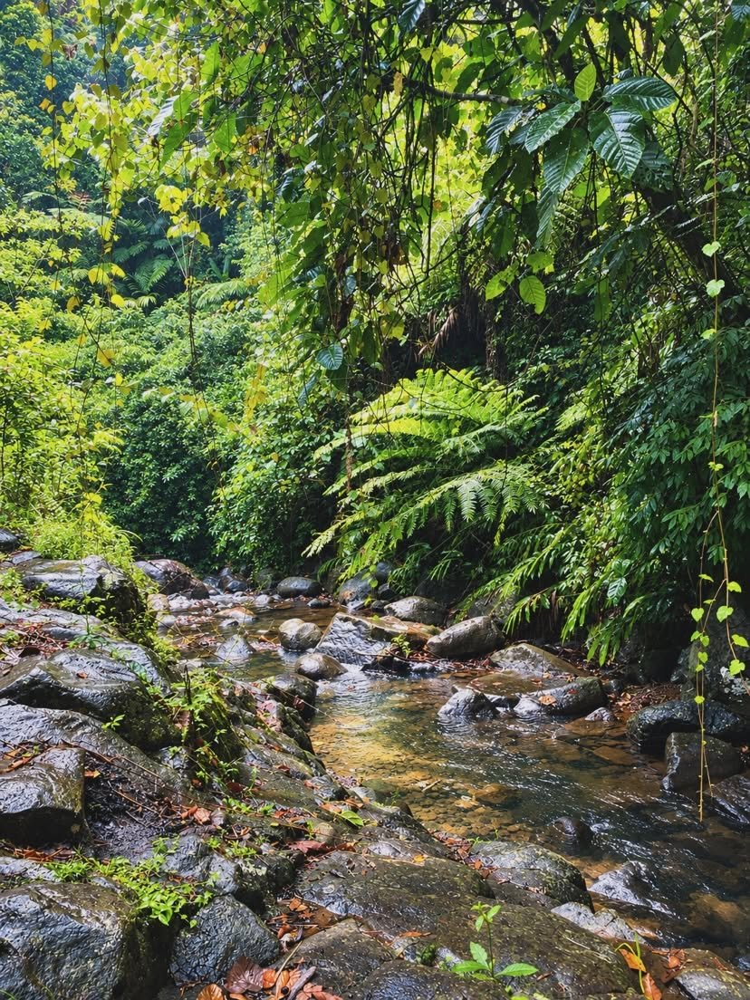
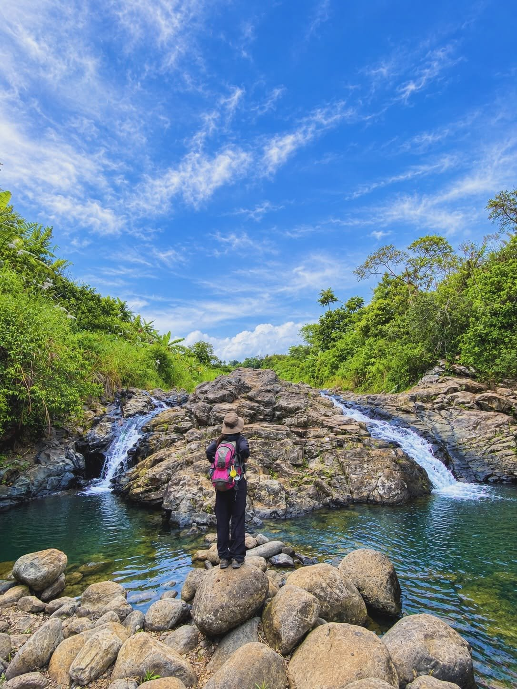

5 photos
5 photos
Your shortlist
0 saved
Saved places
Keep the cafés, waterfalls, and stays you want to come back to. Saved places stay on this device.
5 photos 5 photos
5 photosVictoria's Haven
Affordable, safe & clean rest house near the Claveria–Gingoog route San Roque, Doalnara, Claveria, Misamis Oriental 5 photos
5 photosClaveria Wooden Cabins
Cozy wooden cabins in the countryside Barangay Aposkahoy, Claveria, Misamis Oriental 5 photos
5 photosRomualda's Vacation House
Private retreat with a pool overlooking the mountains Barangay Mat-i, Claveria, Misamis Oriental 4 photos
4 photosHiraya Farm Escape
Highland leisure farm with ATV, go-karts & rainbow slides Barangay Lanise, Claveria, Misamis Oriental 5 photos
5 photosApoVista Forest Park and Campsite
Forest park & overnight campsite (home of Lantawon Falls) Sitio Lantawan, Aposkahoy, Claveria, Misamis Oriental 5 photos
5 photosCamp Zion Claveria
Weekend camping & bonding destination Barangay Panampawan, Claveria, Misamis Oriental 3 photos
3 photosPayag ni Kuya
Cozy countryside retreat with nipa huts Barangay Patrocinio, Claveria, Misamis Oriental 5 photos
5 photosJILA's Smallville
“Just Imagine Life Away from the City” — flower farm & photo spot Sitio Macupa, Zone 6, Barangay Lanise, Claveria, Misamis Oriental 4 photos
4 photosPBrother's Mountain View Resort
Intimate hillside retreat with pool & mountain views Zone 4, Lower Lanise, Claveria, Misamis Oriental 5 photos
5 photosJanopolan Nature's Spring
Claveria's classic spring & pool eco-tourism retreat Sitio Janopolan, Barangay Poblacion, Claveria, Misamis Oriental 5 photos
5 photosChenenger Mountain Resort
Affordable home-style escape for barkada & family outings Barangay Lanise, Claveria, Misamis Oriental 4 photos
4 photosCabinscape Ridge Resort
Nordic-inspired glamping in the misty highlands Zone 1, Brgy. Mat-i, Claveria, Misamis Oriental 3 photos
3 photosAikeeko Farmview Resort
Floral farm turned mountain resort — “farmcations” & digital detox Purok 4, Brgy. Lanise, Claveria, Misamis Oriental 2 photos
2 photosMailig Falls
Free-entry falls in Malagana Malagana, Claveria, Misamis Oriental 3 photos
3 photosLantawon Falls
The falls inside ApoVista Forest Park ApoVista Forest Park and Campsite, Aposkahoy, Claveria, Misamis Oriental Temporarily closed
Temporarily closedTwin Falls
Mat-i's twin waterfalls (check status before visiting) Mat-i, Claveria, Misamis Oriental
4 photosBindol Falls
Free waterfall in Lanise Lanise, Claveria, Misamis Oriental
3 photosNasaad Falls
₱10-all-ages falls with cottage rentals Aposkahoy, Claveria, Misamis Oriental 4 photos
4 photosKibolag Falls
₱200 entry includes free falls access & free ride Villa Cascadia, Route 955, Claveria, Misamis Oriental 4 photos
4 photosJaCo's Stopover
Garden stopover for coffee, pasta & local delicacies Zone 1, Barangay Luna, Route 955, Claveria 5 photos
5 photosThe Promise Cafe
Scenic café & restaurant on Claveria Road Claveria Road, Claveria, Misamis Oriental 4 photos
4 photosKasadya Cafe
Homey garden café with comfort food Barangay Tamboboan, Claveria, Misamis Oriental 4 photos
4 photosThe Sibs Coffee
Local coffee shop in Claveria Claveria, Misamis Oriental 5 photos
5 photosThe Haze Kaffe
Mountainside café & mini-resort on the Route 955 border Route 955, Sitio Civoleg, Brgy. Lunotan (Gingoog–Claveria mountain border), Misamis Oriental 5 photos
5 photosHamugaway ni Dodongstan Café and Restaurant
Filipino dishes & coffee with scenic mountain views Route 955, Barangay Ane-i, Claveria, Misamis Oriental 3 photos
3 photosSanctum by CNC Cafe
Cozy coffee break in Poblacion Magantol Village, Zone 6, Artadi Street, Poblacion, Claveria, Misamis Oriental 5 photos
5 photosChelsea's Cafe and Restaurant
Relaxing stop in Lanise for food & refreshments Barangay Lanise, Claveria, Misamis Oriental 4 photos
4 photosJulio's Cafe and Restaurant
Convenient Route 955 stop in Mat-i Route 955 (Big C Route), Barangay Mat-i, Claveria, Misamis Oriental 4 photos
4 photosLone Wolf Cafe
Claveria's first 24/7 introvert-themed coffee shop Brgy. Luna, Claveria, Misamis Oriental (in front of the Luna Barangay Hall, along Route 955) 5 photos
5 photosDon Narciso Cafe
Scenic Lanise stopover with mountain views Zone 6, Brgy. Lanise, Claveria, Misamis Oriental 4 photos
4 photos